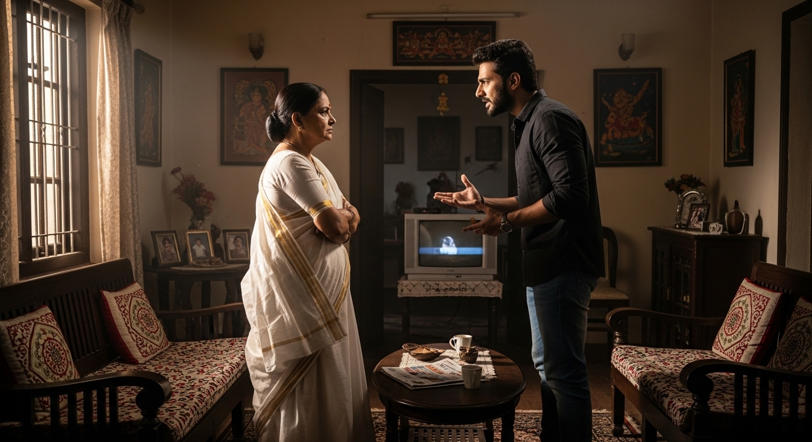
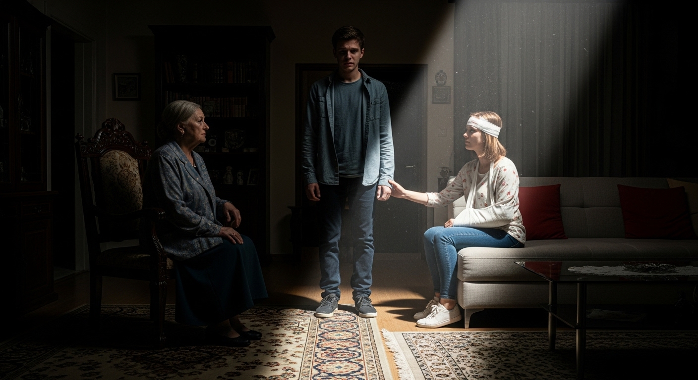
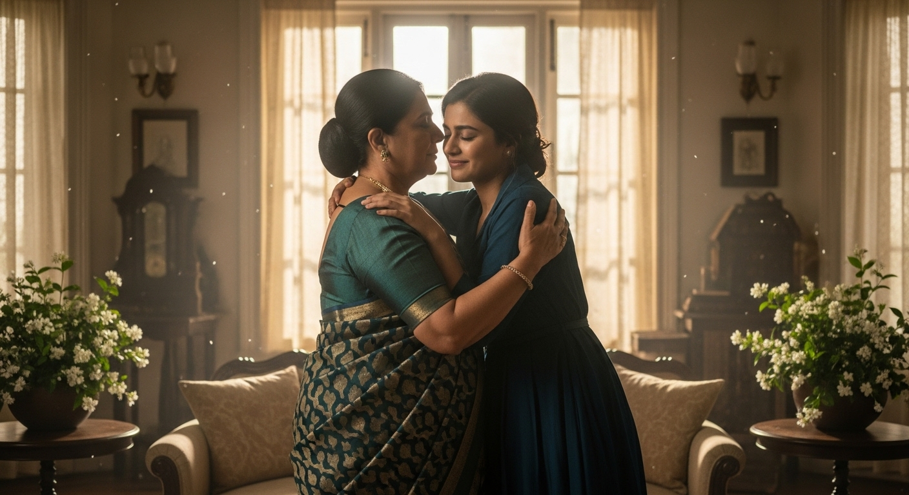

लेखक: विष्णु प्रभाकर
मूल विषय: रूढ़िवादी संस्कारों और मानवीय भावनाओं (प्रेम/ममता) के बीच का संघर्ष।
पात्र परिचय:
एकांकी की शुरुआत में दिखाया गया है कि माँ (मंगला) पुरानी परंपराओं, छुआछूत और जाति-पाँति के बंधनों में जकड़ी हुई है। उसका बड़ा बेटा अविनाश एक बंगाली लड़की से प्रेम विवाह कर लेता है। चूँकि वह लड़की उनकी जाति (वर्ण) की नहीं थी, इसलिए माँ के 'संस्कारों' को ठेस पहुँचती है और वह अपने ही बेटे को घर से निकाल देती है। माँ को लगता है कि अविनाश ने परिवार की प्रतिष्ठा और सदियों पुरानी परंपराओं को तोड़ दिया है। दूसरी ओर, छोटा बेटा अतुल और उसकी पत्नी उमा आधुनिक विचारों वाले हैं। वे यह नहीं मानते कि केवल जाति या रीति-रिवाज इंसान की अच्छाई तय करते हैं। वे चाहते हैं कि अविनाश को वापस घर बुला लिया जाए, परंतु माँ अपने रूढ़िवादी संस्कारों के कारण ऐसा करने से साफ मना कर देती है।

कहानी में नया मोड़ तब आता है जब उमा को पता चलता है कि अविनाश को भयंकर बीमारी (हैज़ा/कॉलरा) हो गई है और वह मृत्यु शय्या पर है। उमा और अतुल माँ को यह बात बताते हैं। माँ यह सुनकर भीतर ही भीतर तड़प उठती है क्योंकि अंततः वह एक माँ है और उसकी 'भावना' (ममता) अपने बेटे के लिए जाग उठती है। लेकिन उसके 'संस्कार' अभी भी उसे रोक रहे होते हैं। उसे डर होता है कि अगर वह अपने समाज से बहिष्कृत बेटे के घर गई, तो समाज क्या कहेगा।
अतुल जब अविनाश को देखकर लौटता है, तो वह माँ को बताता है कि अविनाश की हालत बहुत खराब थी, लेकिन उसकी बंगाली पत्नी ने रात-दिन एक करके उसकी सेवा की है। उसने अपनी परवाह किए बिना, यहाँ तक कि खुद को खतरे में डालकर अविनाश की जान बचाई है। यह बात सुनकर माँ का हृदय पिघलने लगता है। उसे एहसास होता है कि जिस लड़की को वह नीची जाति या गैर-संस्कारी मानती थी, उसी ने एक सच्ची भारतीय नारी का धर्म निभाते हुए उसके बेटे को जीवनदान दिया है।
अविनाश की बीमारी और उसकी बंगाली पत्नी की निस्वार्थ सेवा के बारे में जानकर माँ के भीतर चल रहा द्वंद्व (संस्कार बनाम भावना) समाप्त हो जाता है। माँ की ममता (भावना) उसके रूढ़िवादी संस्कारों पर विजय प्राप्त कर लेती है। एकांकी के अंत में, माँ अपने सभी सामाजिक बंधनों, झूठे सम्मान और रूढ़िवादी विचारों को त्याग देती है। वह उमा से कहती है कि वह उसे अविनाश के घर ले चले, क्योंकि वह अपनी उस बहू (बंगाली बहू) को गले लगाना चाहती है जिसने उसके बेटे की जान बचाई है। इस प्रकार एकांकी यह संदेश देते हुए समाप्त होती है कि मानवीय प्रेम और भावनाएँ किसी भी रूढ़िवादी संस्कार से कहीं अधिक महान हैं।

विष्णु प्रभाकर जी ने इस एकांकी के माध्यम से समाज में फैली जाति-पाँति, छुआछूत और रूढ़िवादी परंपराओं पर गहरा प्रहार किया है। एकांकी का मुख्य संदेश यह है कि मनुष्य द्वारा बनाए गए झूठे संस्कार (रीति-रिवाज) कभी भी मानवीय भावनाओं (ममता, प्रेम, त्याग) से बड़े नहीं हो सकते। समय और परिस्थिति के अनुसार पुराने और गले-सड़े संस्कारों को त्याग देना चाहिए। बंगाली बहू के चरित्र के माध्यम से यह दर्शाया गया है कि किसी भी व्यक्ति का मूल्यांकन उसकी जाति या प्रांत से नहीं, बल्कि उसके कर्मों, गुणों और सेवा-भाव से किया जाना चाहिए।